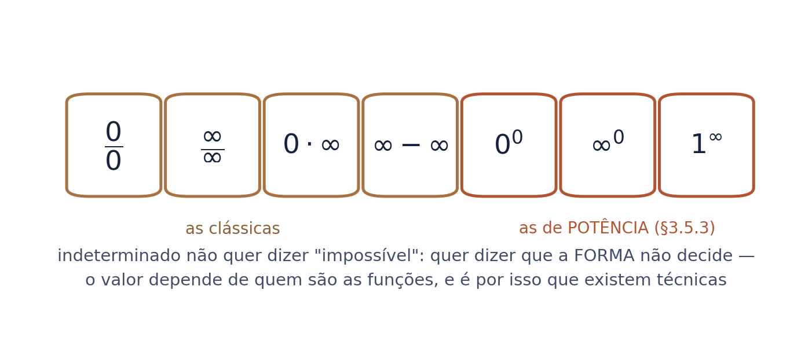
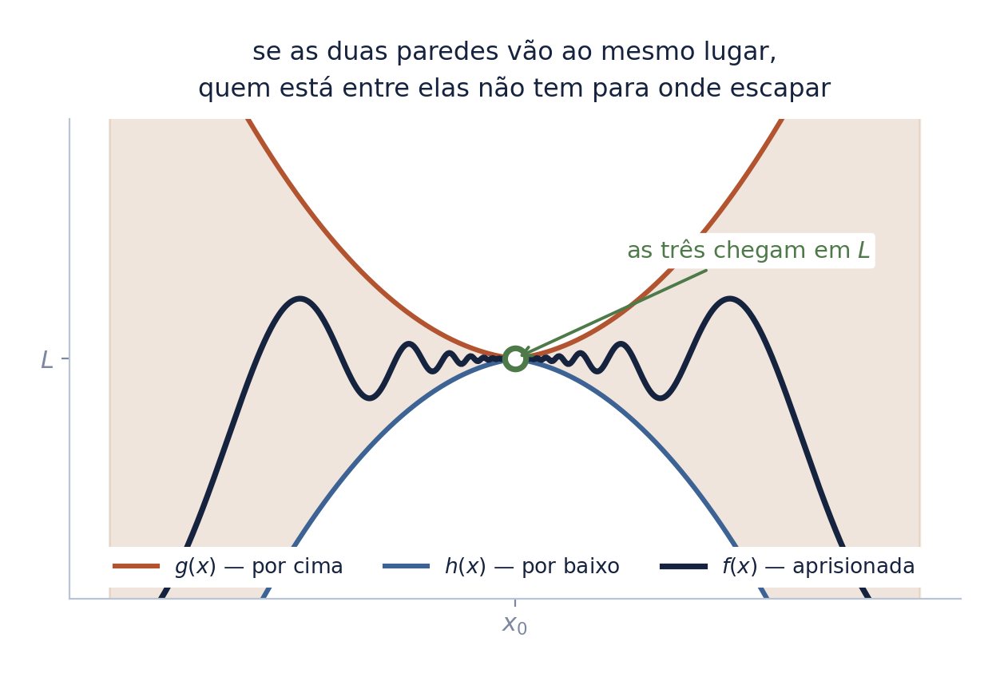
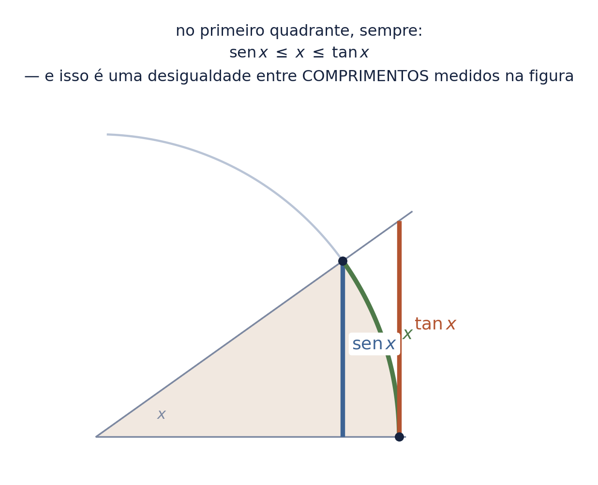
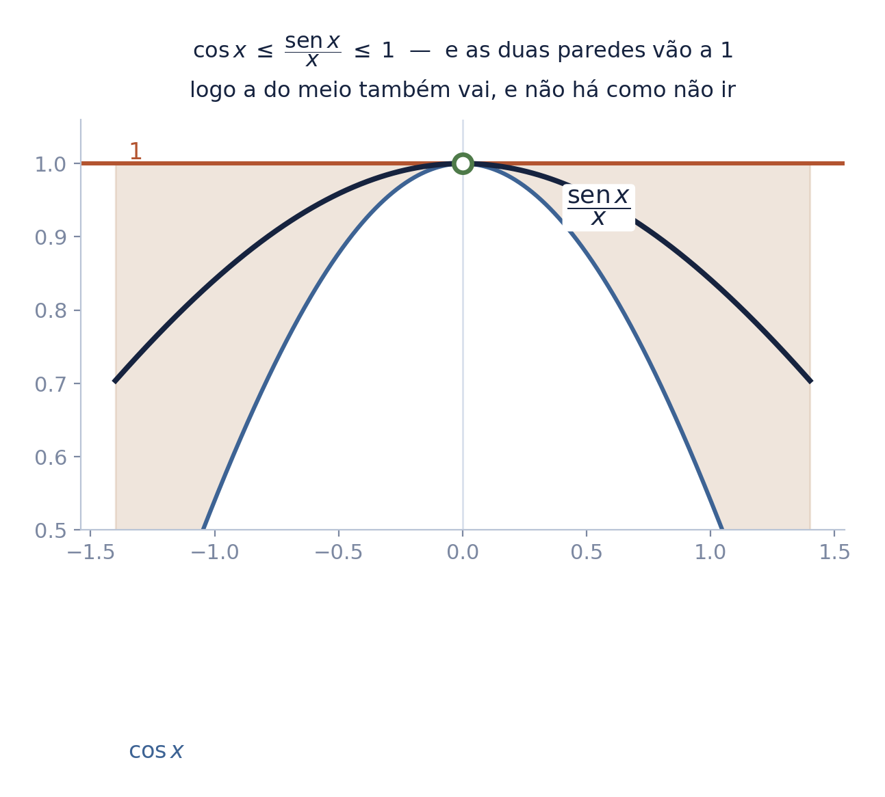
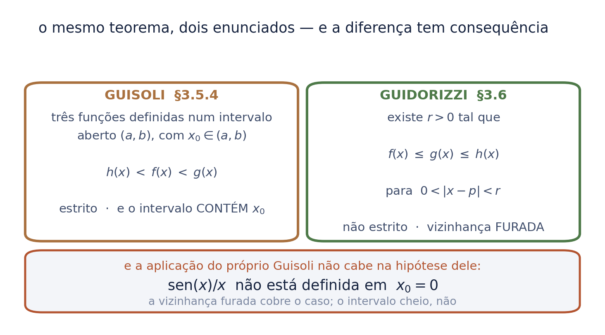
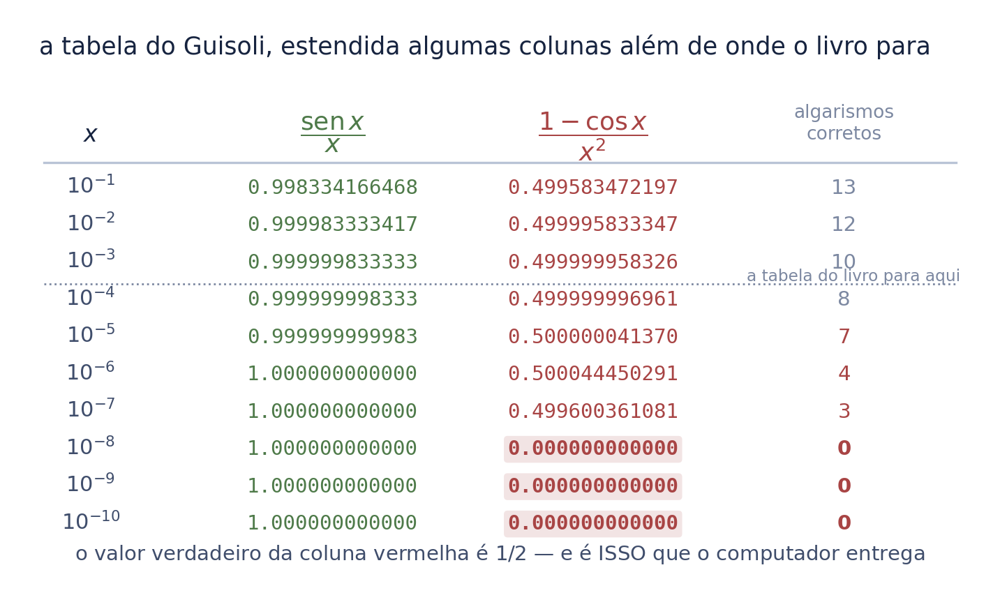
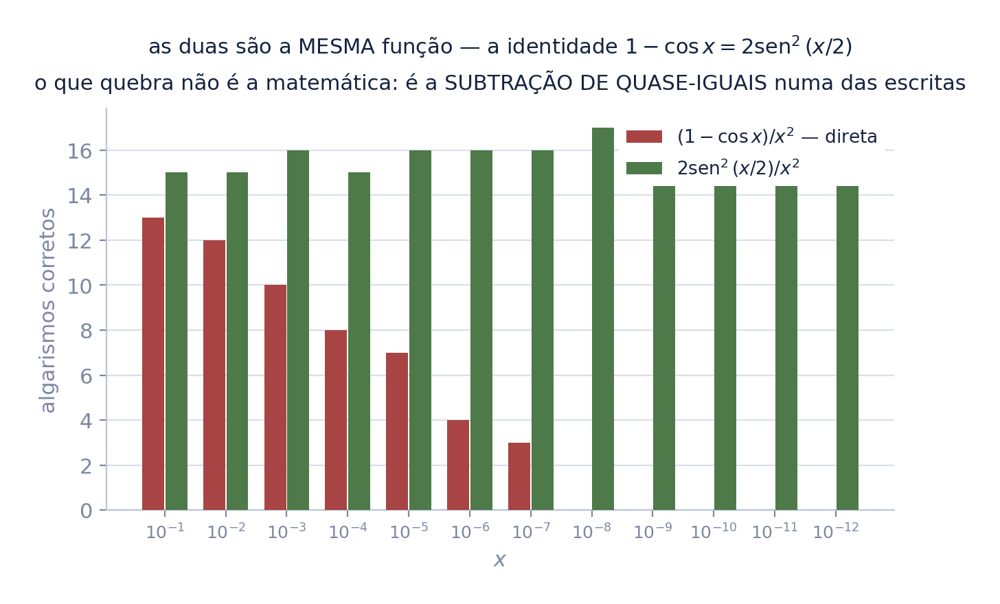
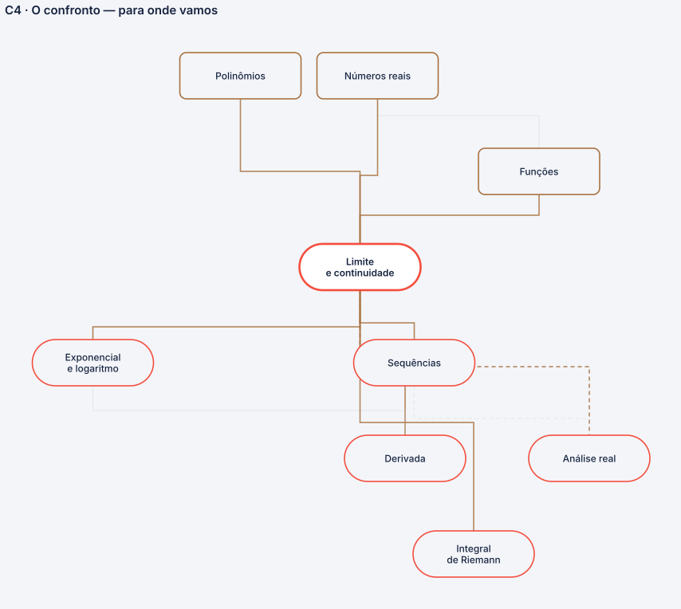

propriedades, indeterminações e o Teorema do Confronto
O primeiro seminário mostrou Arquimedes prendendo \(\pi\) entre dois polígonos. Aquele gesto virou teorema — e é ele que fecha esta série.
No caminho, o número que a série adivinhou por tabela na folha 3 do seminário anterior volta aqui demonstrado. E volta pelo ciclo trigonométrico, que é geometria analítica pura.
Autor · Mateus Felipe Alkimim Pereira
Coautora · Sara Catiele Nogueira Pereira
Orientador · Rosivaldo Antônio Gohnan
Este deck vive dentro do círculo de raio \(1\), e o Ler um gráfico já deixou lá quatro comprimentos:
Aqui, tangente é o segmento do círculo — um comprimento. No seminário Antes da palavra limite ela era a reta que encosta numa curva. Mesma palavra, objetos diferentes.
é por isso que a desigualdade da próxima estação se resolve olhando: os três são comprimentos no mesmo desenho, e dá para ver qual é maior sem conta nenhuma.
Se \(\lim f\) e \(\lim g\) existem, então:
\[\lim (f \pm g) = \lim f \pm \lim g\] \[\lim (f \cdot g) = \lim f \cdot \lim g\] \[\lim \frac{f}{g} = \frac{\lim f}{\lim g}, \quad \text{se } \lim g \neq 0\]o limite atravessa as operações — some com a soma, multiplica com o produto. Repare na condição do quociente: ela é a porta por onde as indeterminações entram.

Quando o denominador vai a zero, a regra do quociente cala. Sobra a forma \(0/0\) — e ela não decide nada.
"indeterminado" quer dizer que a forma não basta: o valor depende de quem são as funções. \(x/x\) dá 1; \(x^2/x\) dá 0; \(x/x^3\) dispara. Todas do tipo \(0/0\), três destinos diferentes.
Há ainda as de potência — \(0^0\), \(\infty^0\), \(1^\infty\) — que precisam de logaritmo para virar uma das outras.
E é aqui que o \(\operatorname{sen}(x)/x\) volta: ele é \(0/0\), a tabela do seminário anterior sugeriu \(1\), e nenhuma propriedade operatória alcança esse valor. Falta uma ferramenta.
Sejam \(f\), \(g\) e \(h\) definidas num intervalo aberto \((a,b)\) com \(x_0 \in (a,b)\). Se nesse intervalo \(h(x) < f(x) < g(x)\) e
\[\lim_{x \to x_0} g(x) = \lim_{x \to x_0} h(x) = L,\]então \(\displaystyle\lim_{x \to x_0} f(x) = L\).
também chamado de Teorema do Sanduíche. Se \(f\) está espremida entre duas funções que vão ao mesmo destino, ela não tem para onde escapar.

Aqui o círculo de raio 1 paga o seminário inteiro. No círculo de raio 1, para \(x\) no primeiro quadrante, três objetos:
não é conta: é olhar a figura. O arco é mais longo que a corda e mais curto que o caminho por fora. A desigualdade é entre comprimentos medidos no desenho.

Partindo de \(\operatorname{sen} x \leq x \leq \tan x\), divida tudo por \(\operatorname{sen} x\), que é positivo no primeiro quadrante:
e invertendo (o que troca o sentido das desigualdades):
as duas paredes são \(\cos x\) e a constante \(1\), e as duas vão a 1 quando \(x \to 0\). Pelo Confronto, a do meio vai também — e não há como não ir.

No seminário anterior, a tabela do Exemplo 3.2 sugeriu \(1\). Agora o mesmo número saiu de um argumento, sem calculadora e sem tabela.
A série abriu com um número adivinhado e fecha com o mesmo número demonstrado.
e a diferença entre as duas coisas não é cerimônia. A tabela não certifica — a próxima folha mostra, com medida, um caso em que ela entrega o valor errado com cara de certeza.
Note o que o Confronto fez: ele calculou um limite que nenhuma propriedade operatória alcança, porque \(\operatorname{sen}(x)/x\) é \(0/0\) e a regra do quociente cala.
Este teorema aparece nos livros em duas formas, e a diferença entre elas tem consequência:
e a aplicação mais clássica do teorema não cabe na hipótese de A: \(\operatorname{sen}(x)/x\) não está definida em \(x_0 = 0\), logo não existe intervalo contendo \(0\) onde as três funções estejam definidas. A vizinhança furada cobre o caso; o intervalo cheio, não.

Vale dizer com todas as letras, porque a folha anterior pode soar como acusação e não é:
a lição não é sobre os autores. É que a hipótese certa é a que cobre o caso que você vai usar — e descobrir isso exige ler mais de um enunciado do mesmo teorema.
Folga secundária, menor: o argumento do ciclo corre no primeiro quadrante, logo entrega \(x \to 0^+\). O limite bilateral precisa que \(\operatorname{sen}(x)/x\) seja par, e isso não é dito.
"munido de uma calculadora, é possível calcular praticamente qualquer limite apenas estipulando valores e observando o que ocorre com eles em uma tabela à medida que \(x\) se aproxima do valor desejado."
A tabela dele para em \(10^{-4}\). Estendida algumas colunas, sobre \((1-\cos x)/x^2\), cujo valor é \(1/2\):
não é deriva lenta: é precipício. E a tabela não avisa — ela entrega zeros alinhados, com toda a cara de convergência.

Pela identidade \(1 - \cos x = 2\operatorname{sen}^2(x/2)\), a mesma função se escreve de outro jeito — um que não subtrai números quase iguais:
Medido, contra o valor verdadeiro em 50 dígitos:
as duas são a mesma função. O que quebra é a subtração de quase-iguais numa das escritas dela — e trocar de escrita conserta sem mudar a matemática.
Por isso o teorema não é cerimônia: ele entrega o valor sem depender de quem faz a conta.

E cada um por uma razão oposta:
adiar uma demonstração é decisão de exposição, não desleixo. Os dois avisam que estão adiando, e é o aviso que faz a diferença entre expor e enganar.
É exatamente aqui que esta série para: o passo seguinte é a definição formal de limite, e ela merece um seminário próprio. A intuição chegou até onde podia.
O exemplo canônico do Confronto não é exemplo: é uma peça de software que roda toda vez que uma imagem muda de tamanho.
"sinc de xis é igual a seno de pi xis, sobre pi xis".
O sinc é o reconstrutor ideal de reamostragem — e o Lanczos, o filtro que se escolhe quando se redimensiona uma imagem a sério, é sinc janelada: o mesmo desenho, cortado a uma distância finita.
e o centro do filtro é uma indeterminação \(0/0\) — exatamente a que este deck resolveu. O valor 1 do tap central sai do Confronto. Sem este teorema o filtro não tem valor no meio, e a imagem não pode mudar de tamanho.
O teorema que fecha a série é o que faz uma imagem poder ser redimensionada.
Este seminário mora no limite, o mesmo nó do anterior. A figura é a mesma de propósito: o mapa não distingue os dois, porque para ele basta saber que o limite vem depois de função, polinômios e reais.
O que muda é o que sai daqui. Com o confronto fechado, o limite passa a pagar nos cinco que dependem dele — e o primeiro a cobrar é a derivada.
é o fecho do arco. Daqui em diante o mapa deixa de ser orientação e vira ementa: cada nó adiante é uma aula do Guidorizzi, na ordem em que ele os põe.

Nenhum é decoração: cada um entrou com o conceito que carrega.
| \(\leq\) | "menor ou igual" — e a diferença para \(<\) é o assunto da folha 8 |
| \(0 < |x-p| < r\) | a vizinhança furada: perto de \(p\), mas sem \(p\) |
| \(\tan x\) | a tangente: \(\operatorname{sen} x / \cos x\) |
| radiano | o ângulo cujo arco mede 1 no círculo de raio 1 — é o que faz \(x\) ser comprimento |
| \(0/0\) | forma indeterminada: a forma não decide, o valor depende das funções |
| \(1^\infty\) | indeterminada de potência — vira uma das outras por logaritmo |
| algarismo correto | quantos dígitos de um resultado numérico batem com a verdade |
| quase-iguais | dois números muito próximos: subtraí-los destrói a precisão |
e uma correção registrada: a primeira versão da medida comparava cada valor com o limite em vez do valor verdadeiro da função naquele \(x\) — confundia convergência com erro de máquina, e reprovava o próprio controle.
e a hipótese certa é a que cobre o caso que você vai usar
Ele prendeu \(\pi\) entre um polígono por dentro e um por fora, e deixou os dois se fecharem. Dois mil anos depois isso tem nome, enunciado — e dois enunciados, com alcances diferentes.
A série para aqui, onde a intuição se esgota e o rigor passa a ser cobrado: a próxima seção é a definição formal de limite. É outro seminário.